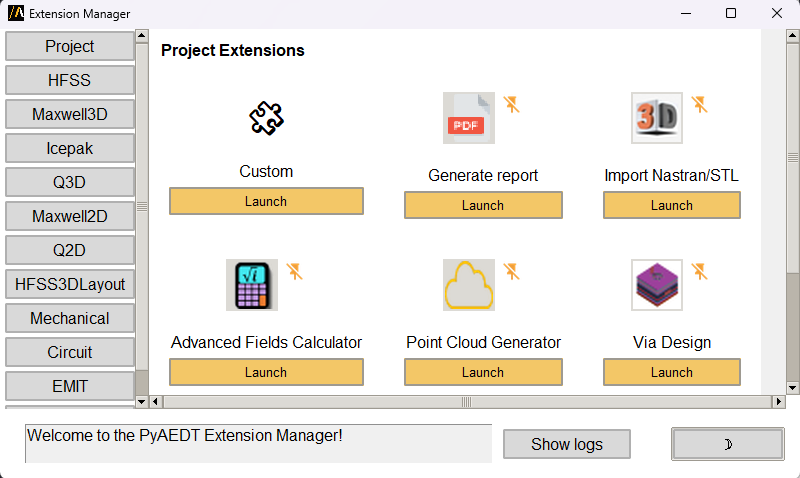
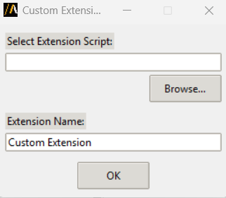
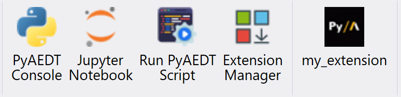

Extensions#
Extensions provide a simplified graphical user interface (GUI) to perform automated workflows in AEDT, they are generally tool-specific and are therefore only accessible given the appropriate context.
In AEDT, you can use the Extension manager panel to add or remove extensions. The Extension manager is one of the AEDT panels available in the AEDT Automation tab.
The Extension manager allows the user to install three different types of extensions:
Pre-installed extensions available at project level.
Open source PyAEDT toolkits available at application level.
Custom extensions installable both at project and application level.
The following sections provide further clarification.
You can launch extensions in standalone mode from the console or a Python script.
Pre-installed extensions#
Project extensions#
Pre-installed extensions are available at project level so they are available for all AEDT applications. They are small automated workflows with a simple GUI.
Import a Nastran or STL file in any 3D modeler application.
Configure layout for PCB & package analysis.
Lear how to use the Advanced Fields Calculator extension.
Lear how to convert projects from 2022R2 to newer versions.
Generate and import points list from a geometry.
Generate a parameterized via design.
HFSS 3D Layout extensions#
Pre-installed extensions are available at HFSS 3D Layout level. They are small automated workflows with a simple GUI.
Parametrize a full layout design.
Generate arbitrary wave ports in HFSS.
Edit a source from file data in HFSS 3D Layout.
Advanced layout cutout.
Export layout.
Export layout to 3D.
Layout design toolkit.
HFSS extensions#
Pre-installed extensions are available at HFSS level. They are small automated workflows with a simple GUI.
Design a choke and import it in HFSS.
Edit a source from file data in HFSS.
Shielding effectiveness automated workflow HFSS.
From a line generate the parameters needed to simulate a trajectory.
Automated assembly workflow.
Extract Fresnel coefficients from HFSS Floquet port simulations for periodic structures.
Icepak extensions#
Pre-installed extensions are available at Icepak level. They are small automated workflows with a simple GUI.
Import a CSV file containing sources layout and power dissipation information.
Circuit extensions#
Pre-installed extensions are available at Circuit level. They are small automated workflows with a simple GUI.
Import different schematic files (ACS, SP, CIR, QCV) into Circuit.
Apply simulation configuration to a Circuit design.
Twin Builder extensions#
Pre-installed extensions are available at Twin Builder level. They are small automated workflows with a simple GUI.
Convert Twin Builder design to Circuit.
Maxwell extensions#
Pre-installed extensions are available at Maxwell level. They are small automated workflows with a simple GUI.
Export fields loss distribution to a generic format (CSV, TAB or NPY).
Automation of vertical and flat coil geometries.
EMIT extensions#
Pre-installed extensions are available at EMIT level. They are small automated workflows with a simple GUI.
Classify results according to radio protection level or interference type.
Generate a 2D heat map of EMI results between two radio bands.
Templates#
Templates to show how to build an extension consisting of a small automated workflow with a simple UI.
Simple extension template to get started.
Open source toolkits#
Open source toolkits are available at application level. They are advanced workflows where backend and frontend are split. They are also fully documented and tested.
Here are some links to existing toolkits: - Antenna Wizard. - Magnet Segmentation Wizard. - Radar Explorer.
Now, you need to download the installer from the Releases section of each toolkit. You can access it by clicking the “Install” button in the corresponding repository.
Custom extensions#
Custom extensions are custom workflows (Python script) that can be installed both at project and application level. From the Extension manager select the target destination and Custom as the extension type:
{kind=link}

Provide the path of the Python script containing the workflow. If you do not specify any script, the template is assigned.
Enter the extension name. This is the name that appears beneath the button in the Automation tab after a successful installation.
{kind=link}

After the normal completion of the installation a new button appears:
{kind=link}

The example below is a simple example of custom extension. The Python script requires a common initial part to define the port and the version of the AEDT session to connect to.
import ansys.aedt.core
import os
# common part
if "PYAEDT_DESKTOP_PORT" in os.environ and "PYAEDT_DESKTOP_VERSION" in os.environ:
port = os.environ["PYAEDT_DESKTOP_PORT"]
version = os.environ["PYAEDT_DESKTOP_VERSION"]
else:
port = 0
version = "2026.1"
# your pyaedt script
app = ansys.aedt.core.Desktop(new_desktop=False, version=version, port=port)
active_project = app.active_project()
active_design = app.active_design(active_project)
# no need to hardcode your application since get_pyaedt_app detects it for you
aedtapp = ansys.aedt.core.get_pyaedt_app(
design_name=active_design.GetName(), desktop=app
)
# your workflow
aedtapp.modeler.create_sphere([0, 0, 0], 20)
app.release_desktop(False, False)